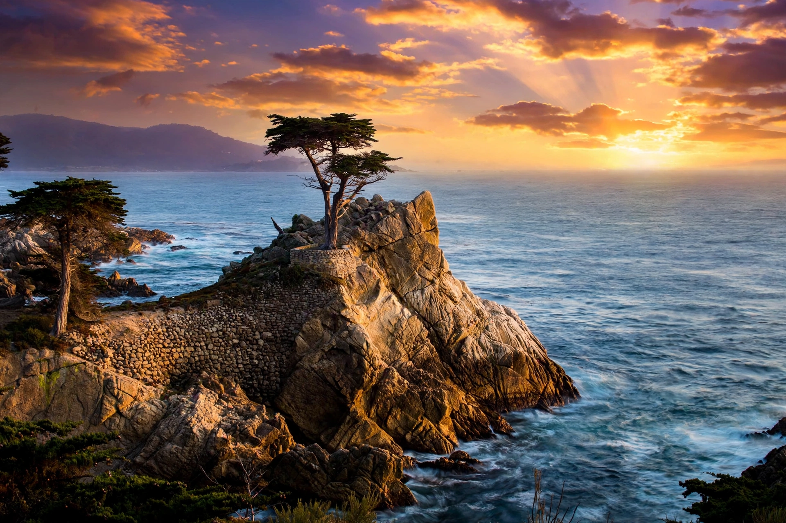

Monterey Peninsula

The Monterey Peninsula is a peninsula in Monterey County, California, United States, projecting into the Pacific Ocean at the southern end of Monterey Bay. It comprises the cities of Monterey, Carmel-by-the-Sea and Pacific Grove, together with the unincorporated communities of Pebble Beach and Del Monte Forest. Once the centre of California's sardine industry and an early artists' colony, the peninsula is today one of the state's best-known tourist and golfing destinations.
Geography
The peninsula's coastline alternates sandy beaches and rocky coves lined with Monterey cypress and Monterey pine, native here to a small relict range. The famous 17-Mile Drive winds through Pebble Beach to landmarks such as the Lone Cypress, a wind-shaped cypress growing on a granite outcrop over the sea, and numerous golf courses including Pebble Beach Golf Links, Cypress Point and Spyglass Hill. Offshore lies the Monterey Bay National Marine Sanctuary, protecting one of North America's largest underwater canyons.
History
Sebastián Vizcaíno landed at Monterey Bay in 1602. The Spanish presidio and mission were founded in 1770, and Monterey served as capital of Alta California. After the American conquest the town declined as the sardine fishery grew: by the 1930s the canneries along Ocean View Avenue — renamed Cannery Row after John Steinbeck's 1945 novel — were packing millions of cases a year, until overfishing and shifting currents collapsed the sardine population in the late 1940s. The waterfront was reborn as a tourist district, capped by the Monterey Bay Aquarium, opened in 1984 on the site of the Hovden cannery.
Carmel-by-the-Sea developed as an artists' and writers' colony after 1906, attracting photographers such as Edward Weston and Ansel Adams. The peninsula also hosts the Defense Language Institute Foreign Language Center at the Presidio of Monterey and the Naval Postgraduate School, giving it a lasting military-education presence.
See also
Monterey, California · Monterey County, California · Monterey Bay Aquarium · Big Sur